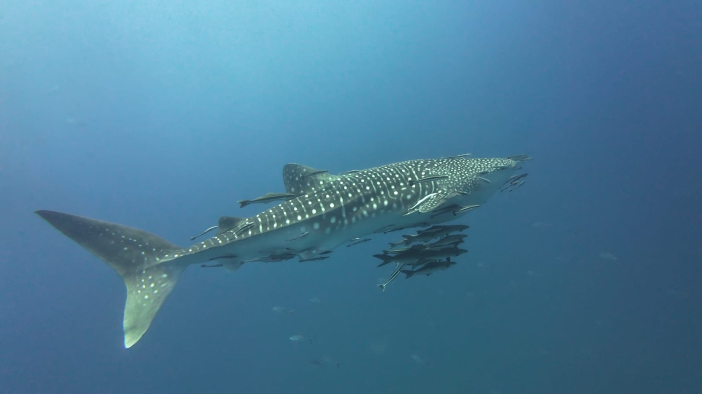
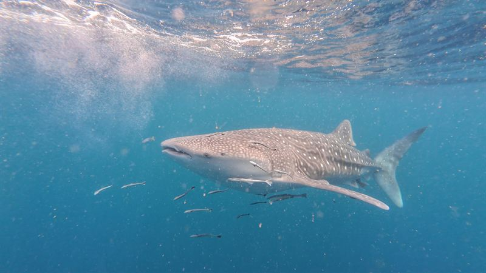
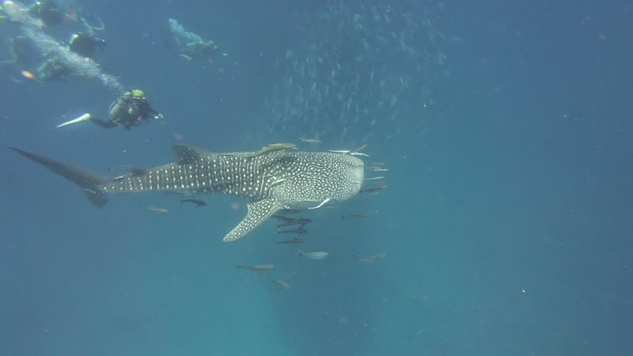
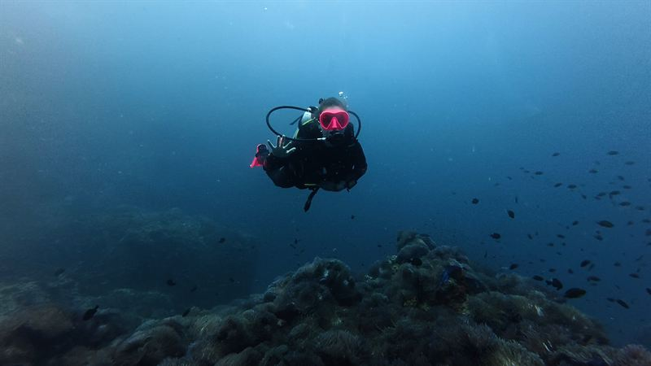
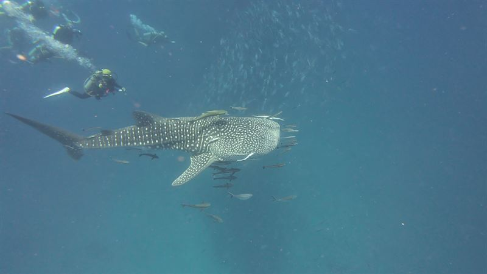

Plankton builds up
Greener water and visibility of about 5–10 m, but a lot of food in it. We have had great encounters in February.

Home / Dive sites / Whale sharks
The biggest fish in the sea visits Sail Rock, an hour by boat from our pier in Chaloklum. Here is when they come, why they come, and how to give yourself the best chance of sharing the water with one.

Sail Rock · a visitor from the open sea
The animal · Rhincodon typus
Despite the name, the whale shark is a fish — the largest fish alive. It feeds by filtering plankton and tiny fish from the water, has no interest in people, and moves slowly enough that you can swim alongside it for a while.
Every whale shark has its own pattern of white spots, as unique as a fingerprint. The species is listed as endangered, which is one more reason to treat every encounter with respect.
When to go
Whale sharks follow the plankton. From January to April the water around Sail Rock is full of it, the big schools of fish feed on it, and the whale sharks come in behind them. But they keep their own calendar.
Greener water and visibility of about 5–10 m, but a lot of food in it. We have had great encounters in February.
The months with the best chances, as the water starts to clear. If whale sharks are your goal, come now.
Sail Rock at its clearest. Sightings are rarer, but they happen — September has given us some of our best.
Rough seas on some days. When it is unsafe the boat stays in, and you get a full refund.
Be realistic: the chance of seeing one on any given day is low. Nobody feeds or attracts whale sharks here — every encounter is completely natural, and that is exactly what makes it so special. And Sail Rock, with its barracuda, batfish and trevally, is a great dive on any day.
How to see one
Whale sharks feed near the surface as often as in the depths, so you do not need to be an experienced diver. The more days you spend at Sail Rock, the better your chances.

Two dives at Sail Rock with a maximum of four divers per guide, who know where to look.
1 day3,200฿
Details
Your open-water dives are at Sail Rock, so you might meet your first whale shark while you are still learning.
3 days12,900฿
Details
Come on the same boat and snorkel at Sail Rock. When a whale shark feeds near the surface, snorkellers get the best view.
1 day1,500฿
Details
Give it space
In the water
A calm whale shark stays longer. These are the rules we brief on the boat, for divers and snorkellers alike.
Questions
The textbook season at Sail Rock is April to June. Whale sharks keep their own calendar, though: we have had great encounters in February and September too, and a sighting is possible at other times of the year.
At Sail Rock, the open-sea pinnacle between Koh Phangan and Koh Tao. It is the best place in this part of the Gulf of Thailand to meet them, and about an hour by boat from Chaloklum.
No, and the chance on any single day is low. Nobody feeds or attracts whale sharks here: they come and go naturally with the plankton, which is what makes every encounter so special. Diving Sail Rock on several days during the season is the best way to improve your chances.
No. Whale sharks feed on plankton and small fish and are harmless to people. The only real risk is to the whale shark, which is why we ask everyone to keep their distance and never touch it.
Yes. Whale sharks often feed near the surface, and some of the most spectacular sightings we have had were while snorkelling. Snorkellers can join our boat to Sail Rock for 1,500฿.
No. Whale sharks swim at every depth and often near the surface, so Open Water students and snorkellers have as good a chance as experienced divers. What matters is being in the water on the right day.
Rent an underwater camera for 600฿ or have your instructor film your dive for 800฿, and if a whale shark comes through, you take it home with you. Please remember: no flash.
Send us your dates on WhatsApp. We will tell you honestly what has been seen at Sail Rock lately and which days look best.
Read more in our Sail Rock diving guide.